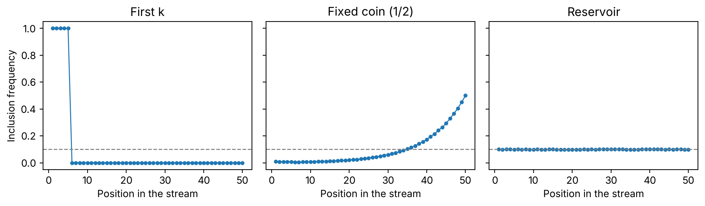

import numpy as np
import matplotlib.pyplot as plt
N, K, REPS = 50, 5, 100_000
rng = np.random.default_rng(2026)Sampling 1,000 events from a stream you cannot rewind or measure
sampling
simulation
python
You want a uniform sample from a log that keeps growing and won’t fit in memory. The obvious tricks either lean towards one end or need the log’s length. Reservoir sampling needs neither, and the reason fits in one line.
Your log grows by a few thousand events a minute and you want 1,000 of them, picked at random. You can’t load it all, and you don’t know how long it will be when you stop. Every obvious way of doing this either leans towards one end of the log or needs the one number you don’t have.
I’ll go through the ones I’d try first, and watch each of them fail.
Then there’s a rule that works. It fits in one line of code, and the proof that it works fits in one line of maths.
A small stream to test on
Ten million events are too many to look at. So I shrink the problem: a stream of 50 events, and a sample of 5.
If a method is fair, every position from 1 to 50 should end up in the sample with probability \(5/50 = 0.1\). I run each method 100,000 times and count how often each position makes it.
First try: keep the first five
The laziest option. You fill the sample and stop listening.
def inclusion_from_samples(sample, n):
"""Share of repetitions in which each position (1..n) ends up in the sample."""
counts = np.bincount(sample.ravel(), minlength=n + 1)[1:]
return counts / sample.shape[0]
first_k = np.tile(np.arange(1, K + 1), (REPS, 1))
freq_first = inclusion_from_samples(first_k, N)
print("first-k, positions 1-5:", freq_first[:5])
print("first-k, positions 6-50 max:", freq_first[5:].max())first-k, positions 1-5: [1. 1. 1. 1. 1.]
first-k, positions 6-50 max: 0.0No surprise. Positions 1 to 5 are in every time. The other 45 never.
Nobody does this on purpose. But head -n 1000 on a log file is exactly this, and I’ve seen it passed off as “a sample” more than once.
Second try: keep swapping with a coin
You want later events to get a chance. So you fill the sample with the first five, and from then on each new event flips a coin. Heads, it replaces one of the five at random.
def run_replace(accept_prob, n, k, reps, rng):
"""Fill with the first k; item i > k replaces a random slot with prob accept_prob(i)."""
sample = np.tile(np.arange(1, k + 1), (reps, 1))
rows = np.arange(reps)
for i in range(k + 1, n + 1):
accept = rng.random(reps) < accept_prob(i)
slot = rng.integers(0, k, size=reps)
sample[rows[accept], slot[accept]] = i
return sampleThe same function will come back later with a different acceptance rule. For now, a coin.
def theory_coin(i):
# i > k: accepted with 1/2, then survives each later step with prob 1 - 1/(2k)
if i > K:
return 0.5 * (1 - 1 / (2 * K)) ** (N - i)
# i <= k: already in the sample, survives all N - k later steps
return (1 - 1 / (2 * K)) ** (N - K)
coin = run_replace(lambda i: 0.5, N, K, REPS, rng)
freq_coin = inclusion_from_samples(coin, N)
for i in (1, 25, 50):
print(f"coin, position {i}: empirical {freq_coin[i-1]:.4f} theory {theory_coin(i):.4f}")coin, position 1: empirical 0.0088 theory 0.0087
coin, position 25: empirical 0.0356 theory 0.0359
coin, position 50: empirical 0.5002 theory 0.5000Now it leans the other way. The last event is in the sample half the time. The first one, less than 1% of the time.
Every event that arrives after it is one more chance to get kicked out. Each new event evicts any given resident with probability \(\frac{1}{2} \cdot \frac{1}{5} = 0.1\). An early event has to dodge that 45 times, and \(0.9^{45}\) is about \(0.009\).
A fixed acceptance rate turns your sample into a picture of the last few minutes. Fine if that’s what you want. Not if you wanted the whole log.
Third try: accept each event with probability 5/50
This one is fair. Each event gets in, independently, with probability \(p = K/N\). Every position has the same chance by construction.
Two problems. You need \(N\), and \(N\) is exactly what you don’t have. And the sample size is no longer yours to choose.
p = K / N
sizes = (rng.random((REPS, N)) < p).sum(axis=1)
print(f"fixed p=k/N: mean size {sizes.mean():.3f}, P(size==5) {np.mean(sizes==K):.4f}, "
f"min {sizes.min()}, max {sizes.max()}")
sizes_wrong = (rng.random((REPS, N)) < K / 25).sum(axis=1)
print(f"believing N=25, real N=50: mean size {sizes_wrong.mean():.3f}, "
f"min {sizes_wrong.min()}, max {sizes_wrong.max()}")fixed p=k/N: mean size 5.004, P(size==5) 0.1847, min 0, max 17
believing N=25, real N=50: mean size 9.993, min 0, max 24You asked for 5 and you got exactly 5 in only 18% of runs. Sometimes zero. The largest was seventeen.
And if you guess \(N\) wrong, the damage goes straight into the size. Guess 25 when the stream turns out to have 50, and your “sample of 5” averages 10. With a real log the guess is always wrong, and memory is the one thing you were trying to cap.
The rule that works
Fill the sample with the first \(k\) events. When event number \(i\) arrives, let it in with probability \(k/i\). If it gets in, it replaces one of the \(k\) residents, chosen at random.
The bar drops as the stream goes on. Event 6 gets in with probability \(5/6\). Event 50, with probability \(5/50\).
That falling bar is what fixes the coin. Late events still get in, just less often. And early events face fewer evictions as the stream goes on. Those two effects cancel.
Take event \(i\), with \(i > k\). It enters with probability \(k/i\). At every later step \(j\), a newcomer gets in with probability \(k/j\). It picks one of the \(k\) slots at random. So event \(i\) gets evicted with probability \(1/j\), and survives with probability \((j-1)/j\). Multiply it all out to the end of the stream:
\[\frac{k}{i} \cdot \frac{i}{i+1} \cdot \frac{i+1}{i+2} \cdots \frac{N-1}{N} = \frac{k}{N}\]
Every numerator cancels the denominator before it. All that’s left is \(k/N\), whatever \(i\) was. The first \(k\) events work the same way, starting from probability 1 instead of \(k/i\).
That’s the line of maths I promised. Here it is in the simulation.
res = run_replace(lambda i: K / i, N, K, REPS, rng)
freq_res = inclusion_from_samples(res, N)
se = np.sqrt(0.1 * 0.9 / REPS)
print(f"reservoir: min {freq_res.min():.4f}, max {freq_res.max():.4f}, "
f"theoretical se {se:.5f}, max |dev| {np.abs(freq_res-0.1).max():.5f}")
print("max |dev| in se units:", np.abs(freq_res - 0.1).max() / se)reservoir: min 0.0977, max 0.1021, theoretical se 0.00095, max |dev| 0.00234
max |dev| in se units: 2.466576574931345All 50 positions land between 0.098 and 0.102. The worst one is two and a half standard errors from 0.1, which is about what you expect from the most extreme of 50 noisy numbers.
Side by side, the three methods that never needed \(N\):
fig, ax = plt.subplots(1, 3, figsize=(10, 3), sharey=True)
pos = np.arange(1, N + 1)
panels = ((freq_first, "First k"), (freq_coin, "Fixed coin (1/2)"), (freq_res, "Reservoir"))
for a, (f, title) in zip(ax, panels):
a.plot(pos, f, marker="o", ms=3, lw=1)
a.axhline(K / N, color="gray", ls="--", lw=1)
a.set_title(title)
a.set_xlabel("Position in the stream")
ax[0].set_ylabel("Inclusion frequency")
plt.tight_layout()
plt.show()
The dashed line is the 0.1 a fair method should hit. The first panel is a wall on the left. The second is a ramp on the right. The third sits on the line.
Ten million events, a thousand slots
Now the real size. The function below takes any iterator, never asks for its length, and never holds more than \(k\) events. This is the basic algorithm, usually called Algorithm R.
def reservoir_sample(stream, k, rng):
"""Algorithm R. Returns (items, indices) for k items drawn uniformly from an iterator."""
items, indices = [], []
for i, x in enumerate(stream, start=1):
if i <= k:
items.append(x)
indices.append(i)
else:
j = rng.integers(1, i + 1) # uniform in 1..i
if j <= k: # happens with probability k/i
items[j - 1] = x
indices[j - 1] = i
return items, indicesOne random integer per event does two jobs. If it falls in \(1..k\), the event gets in, and the number itself says which slot it takes.
I feed it a generator of ten million events, so there’s no list anywhere for it to measure.
def stream_of(n):
for i in range(n):
yield i
rng_demo = np.random.default_rng(7)
items, idx = reservoir_sample(stream_of(10_000_000), 1000, rng_demo)
print(f"len {len(items)}, mean index {np.mean(idx):.0f} (N/2 = 5,000,000), "
f"min {min(idx)}, max {max(idx)}")len 1000, mean index 5098480 (N/2 = 5,000,000), min 28703, max 9996792A thousand events, picked from all over the stream. The average position is about 5.1 million, roughly one standard error from the middle. In plain Python it took around fifteen seconds when I ran it, with memory flat the whole way.
Each of the ten million had the same chance of being in there: \(1{,}000 / 10^7\), one in ten thousand. The cancellation works just as well at this size. Here it is in logarithms, for event number two million:
i, k, n = 2_000_000, 1000, 10_000_000
j = np.arange(i + 1, n + 1, dtype=np.float64)
log_p = np.log(k / i) + np.log1p(-1 / j).sum()
print(f"exp(log_p) = {np.exp(log_p):.10e} target {k/n:.1e}")exp(log_p) = 1.0000000000e-04 target 1.0e-04One in ten thousand, to ten digits.
The algorithm is old. Knuth credits it to Alan Waterman.
In 1985 Jeffrey Vitter made it cheaper. His versions don’t draw a number for every event. They work out how many events to skip before the next one gets in. Late in a long stream almost nothing gets in, so you skip most of the draws. If your bottleneck is the random numbers and not reading the stream, look there next.
What changes for you
When someone hands you “a sample” of a log, ask how it was taken. The first thousand lines describe the morning. A fixed-rate swap describes the last few minutes. A fixed probability gives you a sample of whatever size happened to come out.
If the sample has a fixed size and nobody knew the length of the stream, it’s only uniform if the acceptance bar fell as \(k/i\). Nothing else on the list manages both.
And when it’s your turn to write the sampler, the fair version is no harder than the broken ones. It’s the same loop. You just divide by \(i\).
Reference
Vitter, J. S. (1985). “Random sampling with a reservoir”. ACM Transactions on Mathematical Software 11(1), 37–57. doi:10.1145/3147.3165.